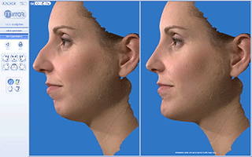

Plastic surgery
Plastic surgeryis a surgical specialty involving the restoration, reconstruction, or alteration of the human body. It can be divided into two categories. The first is reconstructive surgery which includes craniofacial surgery, hand surgery, microsurgery, and the treatment of burns. The other is cosmetic or aesthetic surgery. While reconstructive surgery aims to reconstruct a part of the body or improve its functioning, cosmetic surgery aims at improving the appearance of it. Both of these techniques are used throughout the world.
Etymology
In the term "plastic surgery," the adjective plastic implies sculpting and/or reshaping, which is derived from the Greek πλαστική (τέχνη), plastikē (tekhnē), "the art of modelling" of malleable flesh. This meaning in English is seen as early as 1598. The surgical definition of "plastic" first appeared in 1839, preceding the modern "engineering material made from petroleum" sense of plastic (coined by Leo Baekeland in 1909) by 70 years.
Sub-Specialties
Aesthetic surgery
Aesthetic surgery is an essential component of plastic surgery and includes facial and body aesthetic surgery. Plastic surgeons use cosmetic surgical principles in all reconstructive surgical procedures as well as isolated operations to improve overall appearance
Burn surgery
Burn surgery generally takes place in two phases. Acute burn surgery is the treatment immediately after a burn. Reconstructive burn surgery takes place after the burn wounds have healed.
Microsurgery
Microsurgery is generally concerned with the reconstruction of missing tissues by transferring a piece of tissue to the reconstruction site and reconnecting blood vessels. Popular subspecialty areas are breast reconstruction, head and neck reconstruction, hand surgery/replantation, and brachial plexus surgery.